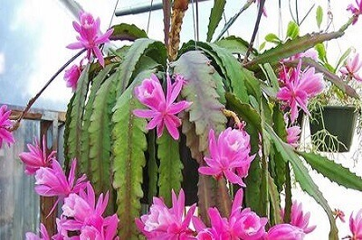
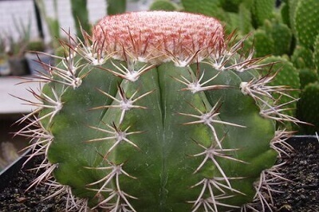
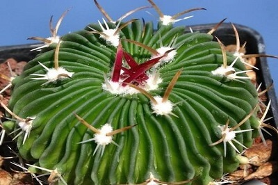

Лесные (тропические) кактусы
Обычно это растения-эпифиты, которые ютятся на стволах деревьев, используя их в качестве опоры. Это вызвано
стремлением к солнечному свету, таким образом, лесные кактусы получают достаточно энергии солнца и в
то же время – необходимую влагу из воздуха.Природная среда произрастания лесных кактусов — это тропические
зоны Южной Америки, Африки и Австралии.Почти все тропические кактусы характеризуются ампельной формой
и длинными, листообразными, свисающими стеблями. Вместо обычных колючек у них есть тонкие волоски.
Гилоцереус

Гилоцереус – представляет кактусы с длинными ветвистыми побегами. Его название переводится,
как «лесной цереус». Виды кактусов культивируют для получения плодов, известных, как «драгонфруты». Этот
кактус рекордсмен по размеру цветков!
Дизокактусы

Дизокактусы – эпифитные растения с ниспадающими побегами, распространенные в комнатном цветоводстве.
Удивительно яркие цветки распускаются днем на концах длинных свисающих стеблей. ;
Mелокактус

Род
Mелокактус является оригинальным представителем тропических сородичей. Это ребристый шаровидный
кактус, отличительной особенностью которого является шерстистое образование на макушке, называемое «цефалий».
Оно появляется только у взрослых экземпляров!
Cтенокактус

Представитель рода
Cтенокактус, невзирая на миниатюрный размер (даже в природе он вырастает лишь до 15 см в диаметре)
имеет огромное количество ребер, у некоторых видов их может быть до 100. Его можно встретить в густой
траве на склонах мексиканских гор.
Классификация
Кактусы разделены на четыре группы.
Подсемейство
Перескиевые (
Pereskia)
Подсемейство Перескиевые (
Pereskioideae)
включает в себя один род кустарников с полноценными листьями и несуккулентными стеблями.Этот род считается эволюционным звеном,
соединяющим кактусы с лиственными растениями. Род
Переския (
Pereskia) насчитывает 8 видов и 4 разновидности. Кустарники высотой от 1 (
Pereskia moorei) до 8 м высотой (
Pereskia sacharosa, Pereskia bahiensis и др.). Один вид
Pereskia aculeata лиана, достигающая 10 м длиной. Стебли перескии, одревесневающие с возрастом, покрыты
длинными колючками. Листья крупные, очередные, слабомясистые, с небольшим черешком. В период покоя в
засушливое время года они опадают. Цветки крупные, колесовидные, в соцветии - кисти, реже одиночные,
развивающиеся на верхушке побега. Окраска цветка белая, розовая, темно-красная, светло-желтая, оранжевая.
Плоды ягодообразные, съедобные.
Подсемейство Опунциевые (
Opuntioideae)
Подсемейство Опунциевые (
Opuntioideae)
объединяет растения, отличающиеся явно заметными редуцированными листьями, всегда присутствующими у молодых побегов, суккулентными
стеблями и особым типом шипов — «глохидиями». Глохидии — это мелкие, хрупкие колючки, очень острые и
жёсткие, снабжены пильчатыми зазубринами по всей длине и растут в больших количествах пучками вокруг
ареол. Попадая в пищеварительный тракт животных, глохидии вызывают сильное раздражение, тем самым защищая
растения от поедания. Несмотря на значительное разнообразие форм и размеров, все растения этого подсемейства
имеют весьма похожие узнаваемые по форме цветки и схожее строение относительно крупных семян. Всходы
имеют явно выраженные семядоли. Стебли обычно имеют явно выраженное сегментное строение.
Подсемейство Маухиенивые
(Maihuenioideae)
Подсемейство Маухиенивые
(Maihuenioideae)
состоит из одного рода, распространённого почти исключительно в Патагонии. Растения похожи внешне на опунциевые, но глохидии
отсутствуют. Как и опунциевые, растения имеют крошечные — до 10 мм — долговечные сочные листья конической
формы, всходы очень напоминают ростки лиственных растений. Несмотря на явно выраженную суккулентность,
растения этого подсемейства не обладают САМ метаболизмом.
Подсемейство Кактусовые
(Cactoideae)
Подсемейство Кактусовые
(Cactoideae)
объединяет в себя все оставшиеся многочисленные рода кактусов. У растений отсутствуют листья в каком-либо
виде — за возможным исключением рудиментарных листьев на цветочной трубке. Также отсутствуют и глохидии.
Всходы имеют форму шарообразную или цилиндрическую, с рудиментарными, часто с трудом угадываемыми семядолями.
В подсемейство включены как эпифитные растения со стеблями, имеющими форму плоских листьев или плетей,
так и многочисленные ксерофиты со всем их разнообразием форм — шарообразные, колоннообразные, стелющиеся,
образующие дернины.